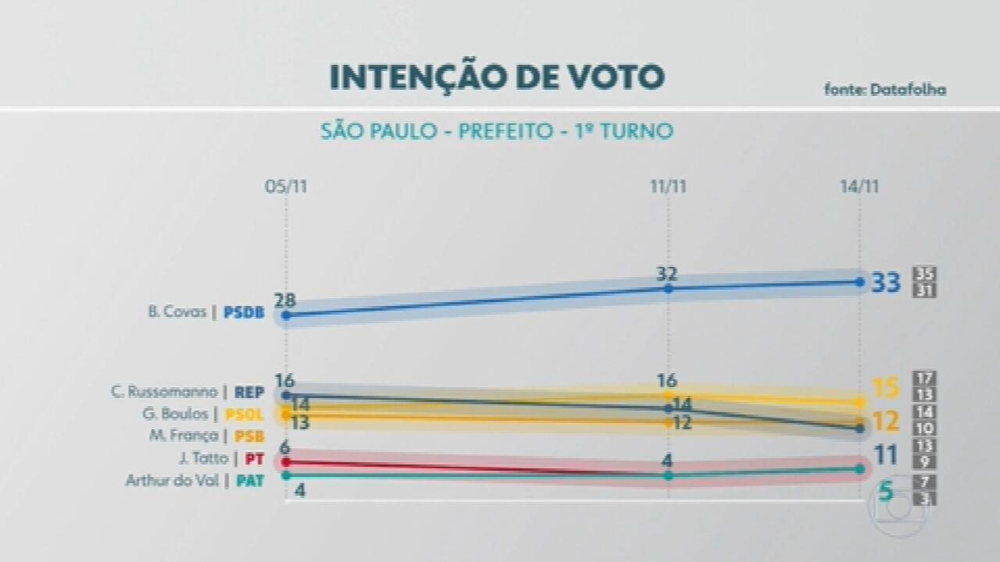

Como as pesquisas eleitorais influenciam a decisão do voto?
Todos os anos milhares de pesquisas de intenção de voto são feitas, porém, será q elas influenciam o eleitor na hora de escolher seu candidato?
As pesquisas são bastante controladas pela Justiça Eleitoral, reguladas pela Lei das Eleiçoes (Lei 9.504/94), elas buscam mostrar as características da população. A Justiça eleitoral estabelece que na hora de fazer a pesquisa, ela tem q ser feita mais de uma vez, mudando o horário, e entrevistando pessoas de sexo, idade, e local de moradia diferente.
Agora, voltando no assunto do título, de acordo com o cientista politico Alderico Santos, a resposta é SIM.
Para ele a pesquisa tem uma influência muito grande na intenção de voto, pois muitos eleitores não querem “desperdiçar” seu voto, com alguém que não ira ganhar. Alderico também diz que existe eleitores que decide votar em um candidato que está bem abaixo das pesquisas, pois, para ele, o seu voto não ira influenciar na vitória do candidato que está ganhando, então ele prefere ajudar o que está perdendo.
Sabendo disso, vários candidatos que aparecem perdendo em pesquisas eleitorais, começam a falar e gravar vídeo dizendo que a pesquisa está errada. Um exemplo é o candidato a prefeito Major Renato da cidade de Araguari-MG. O candidato apareceu perdendo em uma pesquisa eleitoral para seu concorrente, e logo após sair a pesquisa, ele gravou um vídeo falando que era uma notícia falsa.
Com isso vemos a importância que as pesquisas tem na decisão dos votos dos eleitores, vários professores de ciência politica afirmam que, eleitores que estão indecisos, sempre votam no candidato que está acima na intenção de voto. Com isso vemos o motivos de candidatos como o Major Renato fazer vídeos como esse.
Concluindo, sobre a influencia das pesquisa na intenção de voto, é quase unanime as opiniões de profissionais da área da politica. todos eles afirmam que SIM, as pesquisas tem grande importância na vitória de candidatos
Aluno(a): Marcos Vinicius